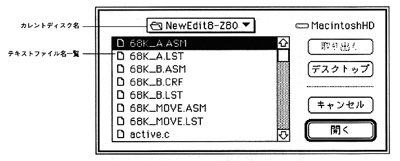
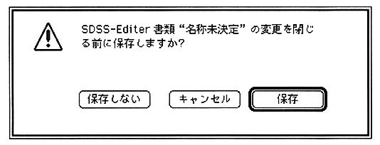

Return to previous page
｜
Return to menu
｜
Go to next page
Open (shortcut: Command-O)
Opens an existing text. The standard file selection dialog for Macintosh is displayed. Specify the file to be opened.

The file name displayed here is limited to the file type of 'TEXT'.
Close (shortcut: Command-W)
Closes the text window currently being edited. If there are changes in the text, a dialog appears prompting you to save.

Save (shortcut: Command-S)
Writes the currently edited text to a file. Text editing is not interrupted and the window remains intact.
Return to previous page
｜
Return to menu
｜
Go to next page